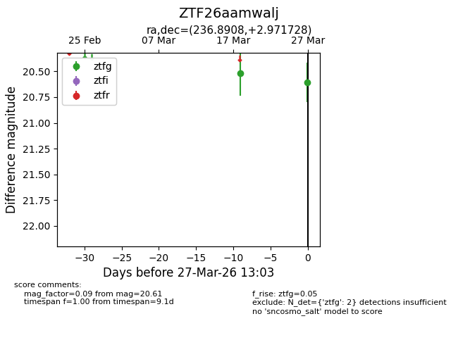
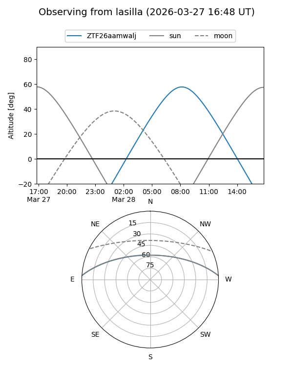
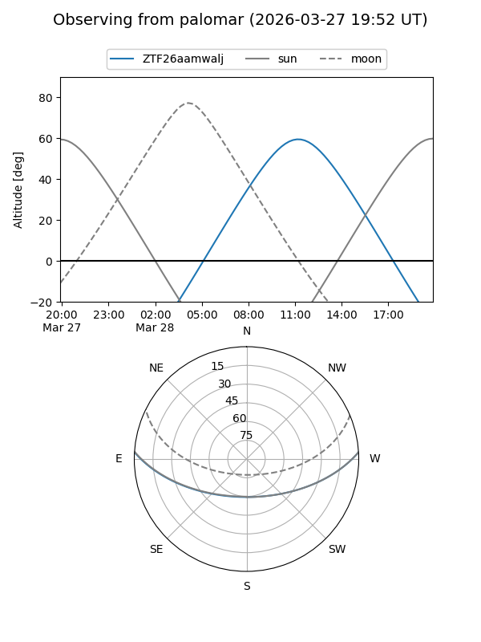

ZTF26aamwalj
Target ZTF26aamwalj at 2026-03-27 13:05
Aliases and brokers:
FINK: link
Lasair: link
ALeRCE: link
alt names
ZTF26aamwalj (ztf,fink_ztf)
Coordinates:
equatorial (ra, dec) = 236.8908,+2.97173
equatorial (HMS+DMS) = 15:47:33.79,+02:58:18.22
galactic (l, b) = (10.8743,+41.50192)
Flags:
Photometry:
last ztfg=20.61
2 ztfg detections
Lightcurve

Visibility


Additional plots